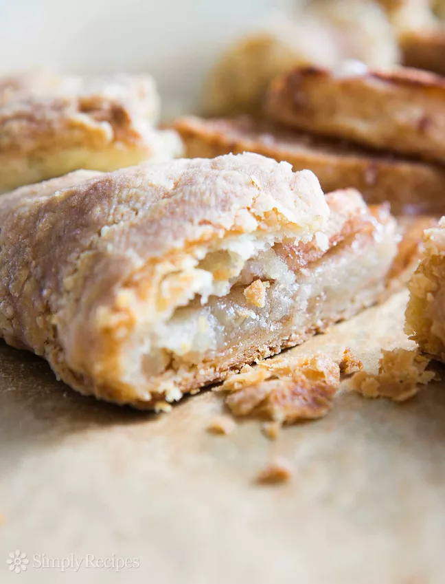

Pie dough
It's the easiest, flakiest homemade pie crust EVER! No machine required for this longtime reader favorite, a buttery pie and pastry crust recipe anyone can make.

INGREDIENTS:
- 2 cups (280g) all purpose flour
- 1 teaspoon salt (skip if using salted butter)
- 2 teaspoons sugar (for sweet recipes, otherwise skip)
- 2 sticks unsalted butter (1 cup, 8 ounces, 225g) cubed
- 1/2 cup (115ml) sour cream (full fat, NOT light sour cream)
INSTRUCTIONS:
- Cut the butter into cubes and let it sit on the counter to take the chill off (don't soften the butter, just let it sit out for couple minutes when you take it out of the fridge).
- In a large bowl, vigorously whisk together the flour, salt (omit if using salted butter), and sugar (if using).
- Sprinkled the cubes of butter over the flour. Use your clean hands to squish the flour and butter together with your thumbs, fingers, and knuckles. Work the butter into the dough until you have what resembles a coarse meal with some flattened chunks of butter.
- Add the sour cream to the flour butter mixture. Use a fork to incorporate into the mixture.
- Use your hands to gather the pastry dough together into a large ball. Use a knife to cut the ball in half. Form into two disks. As you work the dough into disks, it should end up smooth, having the consistency of Play-Doh. Don't worry about over-working this dough. Form the disks so that there are no cracks.
- After the dough has been sitting in the fridge for an hour, remove it and let it sit for 5-10 minutes at room temperature to become more malleable before rolling out.
If it still feels too stiff to roll out, hold your hands around the edges to soften.
To roll out, sprinkle a clean, flat surface with flour. As you roll the dough, check to make sure the bottom is not sticking. If it is, lift it up and sprinkle a little flour underneath.
Roll out to 12 to 14 inches wide, to an even thickness.